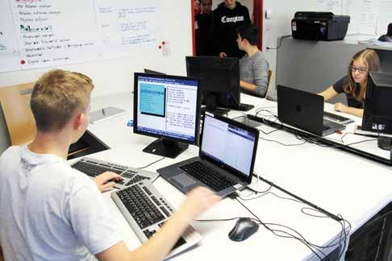

Überbetriebliche Kurse
Überbetriebliche Kurse sind eine entscheidende Ergänzung zur Berufsausbildung. Wichtig ist es, den Auszubildenden zusätzliche Fähigkeiten zu vermitteln.
Was ist ÜK?
ÜK steht für "Überbetriebliche Kurse". Diese Kurse sind Teil der Grundausbildung und dienen dazu, Auszubildenden zusätzlich theoretische und praktische Kenntnisse und Fähigkeiten zu vermitteln. Das Ziel ist es, die Auszubildenden besser auf ihren zukünftigen Beruf vorzubereiten. Die Kursinhalte variieren je nach Berufsfeld und Ausbildungsplan.
Die Dauer und die Häufigkeit der überbetrieblichen Kurse können variieren, typischerweise besuchen Auszubildende diese jedoch in regelmäßigen Abständen während ihrer gesamten Ausbildungsdauer. Ein Kurs kann mehrere Tage bis zu mehreren Wochen dauern. Überbetriebliche Kurse tragen dazu bei, die Qualität der Grundausbildung zu erhöhen und sicherzustellen, dass Auszubildende die erforderlichen Fertigkeiten und Kenntnisse erarbeiten, um erfolgreich in ihrem Berufsfeld zu arbeiten.
Was macht man im ÜK?
In überbetrieblichen Kursen üben sie folgende Tätigkeiten aus:
- Vermittlung grundlegender Fertigkeiten
- Einführung in die grundlegenden Arbeitsmethoden
- Ergänzung zur praktischen Ausbildung im Lehrbetrieb
- Vorbereitung auf den Lehrbetrieb und Berufsalltag
- Planen von Lerneinheiten
- Beurteilung von Lernenden
Die Auszubildenden sollten während der ÜKs motiviert und unterstützt werden, um sicherzustellen, dass sie das Beste aus ihrer Ausbildung herausholen.
Fazit
Fazit ist, dass überbetriebliche Kurse ein wichtiger Baustein der Berufsausbildung sind. Sie tragen dazu bei, gut ausgebildete Fachkräfte auf den Arbeitsmarkt zu bringen. Sie ermöglichen es den Auszubildenden, sowohl die praktischen als auch die theoretischen Aspekte ihres Berufs umfassend zu beherrschen.